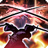
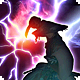
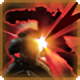
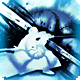
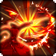
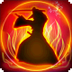
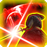

Épée secondaire
 Passif
Passif
Le Shogun peut ajouter son modificateur de Force au jet de dégâts pour une attaque d'arme avec sa deuxième arme. S'il ne tient qu'une seule arme sans le trait “à deux mains”, vous pouvez effectuer une deuxième attaque en action bonus comme si vous teniez deux armes légères, mais sans ajouter votre modificateur de Force à ses dégâts. Vous pouvez ajouter votre Offense à ces attaques.

Frappe éclair
 1 PA (Action Bonus)
1 PA (Action Bonus)
En tant qu'action bonus, le Shogun peut imbiber sa lame d'éclairs crépitants ; toutes les attaques jusqu'à la fin de leur prochain tour infligent des dégâts de foudre en plus de leur type de dégâts normal (les dégâts sont calculés comme s'ils étaient du type auquel l'ennemi est le plus vulnérable).

Parade
 1 PA (Réaction)
1 PA (Réaction)
Après un jet d'attaque au corps à corps contre le Shogun, il peut dépenser sa réaction pour ajouter 1 + son modificateur de Force à sa Défense contre cette attaque.
École de tactiques
 Spécialisation
Spécialisation
Choisissez une École de tactiques. Le Shogun acquerra des aptitudes supplémentaires de cette École au fur et à mesure de leur montée en niveau.
Ordre : Attaque frontale
 2 PA (Action)
2 PA (Action)
En tant qu'action, ciblez une créature dans un rayon de 3 mètres. Jusqu'au début du prochain tour du Shogun, lorsque cette créature est touchée par une attaque ou une aptitude d'une créature hostile, une créature amicale volontaire choisie par le Shogun dans un rayon de 9 mètres de cette cible peut effectuer une seule attaque d'arme. Les dégâts de ces attaques remplacent leur modificateur de caractéristique par le modificateur de Charisme du Shogun.
Heure du crépuscule
2 PA (Action)
Utilisable uniquement de nuit. En tant qu'action, effectuez une attaque au corps à corps contre un ennemi. Cette attaque est effectuée avec un malus de -1 à la précision, mais tout effleurement compte comme une réussite.
Étoile du matin
2 PA (Action)
Utilisable uniquement en journée. En tant qu'action, effectuez une attaque au corps à corps contre un nombre quelconque de créatures dans un rayon de 3 mètres, avec des jets d'attaque séparés pour chaque cible.
Encouragement revigorant
1 PA (Réaction)
Lorsque le Shogun regagne des points de vie d'une source autre que l’Encouragement revigorant, il peut utiliser sa réaction pour soigner jusqu'à 4 créatures dans un rayon de 18 mètres pour des points de vie égaux à 1d8 + modificateur de Charisme (minimum 1). L’Encouragement revigorant peut être utilisé un nombre de fois égal au bonus de maîtrise du Shogun.
Vue d'Avidya
Passif
Le Shogun peut voir la lumière faible comme s'il s'agissait de lumière vive sur une distance de 45 mètres, et aucune lumière comme s'il s'agissait de lumière faible sur la même distance. Le Shogun gagne 1 en précision lorsqu'il se trouve dans une lumière faible ou inexistante.

Confins de la mort
Passif
Lorsqu'il a moins de 25 % de ses points de vie maximum, les attaques du Shogun deviennent critiques en cas de réussite.

Lance sanglante
Passif
Une fois par combat, lorsque le Shogun abat un ennemi, il gagne 4 d'Offense jusqu'à la fin de la rencontre.

Provoquer les assassins
2 PA (Action)
En tant qu'action, le Shogun peut tenter d'attirer toutes les créatures dans un rayon de 6 mètres vers lui. Ces créatures doivent réussir un jet de sauvegarde de Sagesse ou être contraintes de se déplacer uniquement en ligne droite vers le Shogun et ont désavantage sur les jets d'attaque contre les ennemis qui ne sont pas le Shogun, jusqu'au début du prochain tour du Shogun.
Résurgence
Passif
Lorsque le Shogun réussit un jet de sauvegarde contre la mort, il peut compter cette réussite comme deux.
Historien de guerre
1 PA (Action Bonus)
Le Shogun a l'avantage sur les tests de compétence pour jouer à des jeux impliquant des tactiques. De plus, le Shogun peut immédiatement reconnaître quand les ennemis ont une Union disponible ; il peut tenter de déchiffrer quels en sont les effets en utilisant un jet d'Intelligence de DD 15 en tant qu'action bonus.
Lame résonnante
1 PA (Réaction)
Le Shogun peut utiliser sa réaction pour effectuer une attaque au corps à corps lorsqu'une créature qu'il a touchée avec une attaque ce round commence son tour à moins de 1.5 mètres du Shogun.

Puissance du guerrier
 3 PA (Action Complexe)
3 PA (Action Complexe)
La marque noble de la maison du Souverain apparaît sur le corps du Souverain. Pendant le repos court ou long, cette marque rassemble de l'énergie spirituelle et commence à briller faiblement ; la première aptitude utilisant des dés d'Inspiration après un repos court ou long obtient toujours le résultat maximal, et la lueur disparaît.
 Détails de la classe
Détails de la classe
 Points de vie : 1d8 + modificateur de Constitution par niveau de Shogun
Points de vie : 1d8 + modificateur de Constitution par niveau de Shogun Dés de vie : 1d8 par niveau de Shogun
Dés de vie : 1d8 par niveau de Shogun DD des jets de sauvegarde : 8 + bonus de maîtrise + modificateur de Charisme
DD des jets de sauvegarde : 8 + bonus de maîtrise + modificateur de Charisme Maîtrises : Épées, Katana ; Armures légères ; Jeu d'échecs
Maîtrises : Épées, Katana ; Armures légères ; Jeu d'échecs Jets de sauvegarde : Force, Charisme
Jets de sauvegarde : Force, Charisme Compétences : Choisissez 2 parmi Acrobaties, Athlétisme, Histoire, Investigation, Intimidation, Persuasion, Tromperie, Représentation, Discrétion et Escamotage
Compétences : Choisissez 2 parmi Acrobaties, Athlétisme, Histoire, Investigation, Intimidation, Persuasion, Tromperie, Représentation, Discrétion et Escamotage Équipement de départ : Une arme maîtrisée (ou deux si légères), une armure légère, un jeu d'échecs, un sac d'explorateur
Équipement de départ : Une arme maîtrisée (ou deux si légères), une armure légère, un jeu d'échecs, un sac d'explorateur 1 PA (Action Combo)
1 PA (Action Combo)